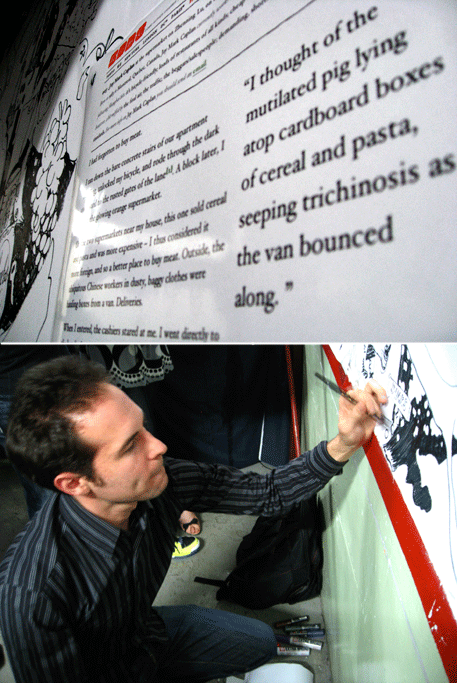

Please do it at home
We had a little fun last week with Hitotoki illustrator Michael Mesker, spoofing the new series of Tokyo Metro posters that have been popping up this year. In each of the originals, a young man or woman commits a sin of 迷惑 (inconsiderateness) on the train, while a pervy-looking salaryman type looks on in silent admonishment through pupil-less Kevin eyeglasses. We all have our own moments of rude obliviousness on the train, and as anyone who’s rode the Metro any weekday after 10, salarymen are no exception.
Bienvenue à Paris
We’re proud to announce the newest addition to Hitotoki’s narrative map of the world: Paris.
(Cue accordion music.) What other city has been as written about and mythologized as Paris? And yet, how often does the myth reflect the reality? Take it from us: not very often. In Paris, the reality is so much better than the myth, and we hope Hitotoki Paris captures something of the vital spirit of the place—its cheek, its attitude, its poise, its mystery, its diversity—by putting you right there in the moment, in a particular place in Paris where something unique and personal is happening.
Roland Barthes develops the theory of the punctum in his book on photography, Camera Lucida. While the studium is the general field of a photograph (the subject matter, the thing that may interest you or attract you to the photograph), the punctum is the detail that interrupts the scene, the “accidental spark that reveals the ‘here and now’ of the photograph.”* “[P]iqûre, petit trou, petite tache, petite coupure—et aussi coup de dés.”** It is a rupture, a break. The punctum changes everything.
The studium, in this case, is Paris, or the particular setting of a hitotoki. The punctum is that telling detail that yokes together the writer and this moment in this place in Paris. That turning point, that point of no return, that crystalline moment that could not occur anywhere else—that’s a hitotoki.
Many thanks to those who contributed stories, photos, and illustrations—please send us more. And to those of you who are just sitting on your submissions, or who have been meaning to sit down and write one for us—what are you waiting for? Send it in!
*Gerhard Richter, Walter Benjamin and the Corpus of Autobiography.
**“Sting, speck, cut, little hole—and also a cast of the dice.” Barthes, Camera Lucida.
Illustrator in Focus: Reid Schwartz
Reid Schwartz is a young illustrator living and working in Brooklyn, New York, who lent his careful hand to our newest Hitotoki by Anne Germanacos.
Our layout constraints didn’t do justice to the beautiful linework of Reid’s piece, so I’m reposting here at a slightly bigger size.
From Shanghai with love…

The Shanghai edition of hitotoki is now live—hiphip! Thank you to those that submitted stories for the launch edition. We think you’ll enjoy the pieces, and even learn a thing or two. Why are foreigners called laowai? What’s the deal with these ‘lane houses’ that everyone always talks about? Poke around and be enlightened.
On the events front, this past Saturday, hitotoki was a partner at Pangea Day Shanghai, the local incarnation of a worldwide film festival. Not only were there scrumptious hito-poems posted about (“handy haikus by hitotoki” that helped folks navigate and explore the venue), in the spirit of ‘celebrating the moving image’, two local artists also illustrated hitotokis (tit and tat) on the spot. Much gratitude to Tango Gao and Chris Clerc (pictured above), our nimble-fingered, creatively-wired friends.
Nial O’Connor also did up this tale in large format but had to submit it before the event as visa woes saw him off to frolic in redtape-hell in Oz. The drawing was a centerpiece at Pangea Day though, and elicited many oohs and ahhs, so xie xie Nial just the same.
I hope you enjoy these tales from my city, and look forward to reading your Shanghai stories. Don’t be shy now…
from the land of xiaolongbao and happy-ending massages,
Panthea
Hitotoki Illustrators wanted
During the initial sculpting of the Hitotoki concept, Paul, Craig and I did our best to keep our focus squarely on the written word, almost to the exclusion of everything else. Our initial creative wranglings mostly happened in a text editor, while visuals were cautiously added later, once they proved their worth as supporting elements.
One such element, the image that accompany each story, has since become one of our favorite challenges. While we receive some images from the writer and borrow others from the Creative Commons pool at Flickr, we began asking volunteer illustrators to help us fill the gaps late last year, resulting in some quite beautiful and clever interpretations of the stories they accompany.
If you’re an illustrator who enjoys Hitotoki, and want to take a shot at an upcoming story, please send samples of your work to what [ at ) hitotoki dot org. Assignments are short, sweet, and accompanied by loving praise and gratitude from us editors and a link back to your website.
Shanghai Launch Date Confirmed
Just wanted to send out a quick notice that HITOTOKI SHANGHAI has confirmed a launch date of May 11th! Panthea Lee, our crime fighting China-based editor has managed to finagle some sort of collaboration between Hitotoki Shanghai and the Pangea Day festival on May 10th. There’ll be Shanghai Hitotokis haphazardly and ‘artfully’ plastered about some sort of ‘art space’ plus live paintings by Shanghai based artist, Nial. The Shanghai edition will then launch the following day.
Updates and a Trip Back in Time
{kind=link}
As we approach our one year anniversary (!!) for launching the Tokyo - English edition of this site, I thought it would be fun to take a quick peek back at what hitotoki could have been. The above image is one of our first comps. Note the absence of a map (which wasn’t added, actually, until right before launch). The design goals of the project were always simple and certain themes and design elements present in the current revision can be seen in this first-round comp.
In other news: we have a couple new city launches coming up in the next two or three weeks. So keep an eye out! Paul, Chris and I have been utterly hammered with work and projects these past couple of months so updates are moving a little slower than anticipated. But it looks like our fearless local editors are on top of things and are finishing up final edits on rounds of hitotokis for launch.
Thank you to everyone who has submitted entries for these new cities (and those currently launched too!). More soon!
Upcoming Cities
We just wanted to take a moment to update everyone on some behind the scenes activities here at Hitotoki HQ, Tokyo.
Many know about the impending Washington, DC edition of Hitotoki. Please submit (we’re going to extend the deadline) if you have a great hitotoki to share about DC.
What many don’t know is that we’ve found, quizzed, interviewed and subjected to a well-defined battery of tests and physical challenges, editors for Paris and Shanghai editions of Hitotoki. Panthea Lee and Lauren Elkin are two wonderful ladies you will be hearing more about soon. For now, even though we don’t have fancy holding pages up, we are accepting entries. The Shanghai form is available at /hitotoki_submission_shanghai.rtf and the Paris form is available /hitotoki_submission_paris.rtf. They’re also linked to on our submissions page.
Us Hitotoki founders here in Tokyo are neck deep in a bunch of projects right now. I’m trying to finish up the production and design of Art Space Tokyo, whereas Paul and Chris are working on some Tokyo Art Beat related art maps. We have quite a few big Hitotoki updates planned and will be refocusing our collective development magic in this direction in the next few weeks.
Welcome to THE BLOG
No, your eyes are not failing you — Hitotoki now has a blog! A ... hitoblog, if you will.
We’ve been growing (behind the scenes) so quickly recently that we realized we’re going to need a centralized place to announce developments, changes to the site and additional cities. We also wanted a place to collect feedback from you, our voracious readers.
Don’t forget to subscribe to the feed. And expect more exciting blog-like content very soon.